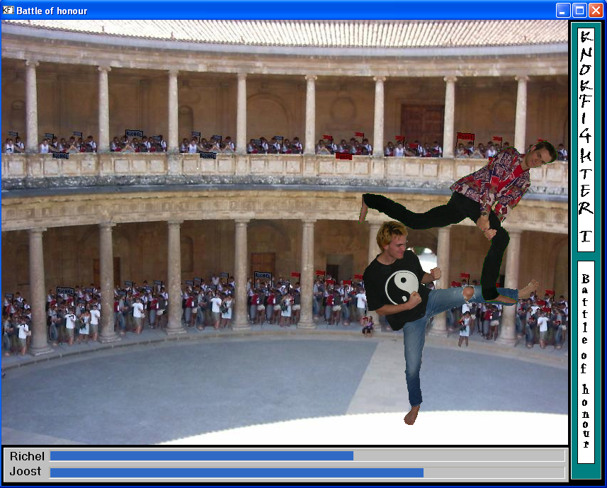
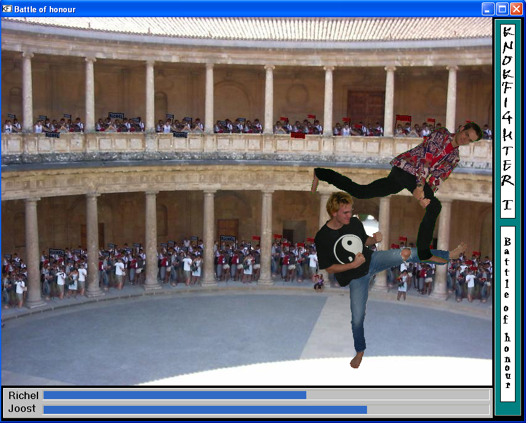

Knokfighter
The game Knokfighter is a Double Dragone clone, using the C++ VCL library.
Knokfighter is programmed by Joost van den Bogaart and Richel Bilderbeek.


The game Knokfighter is a Double Dragone clone, using the C++ VCL library.
Knokfighter is programmed by Joost van den Bogaart and Richel Bilderbeek.
